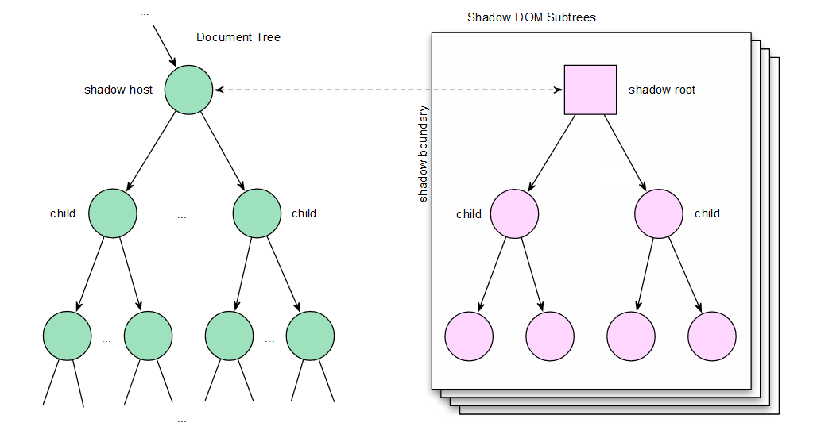
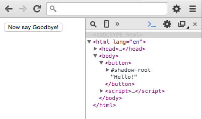
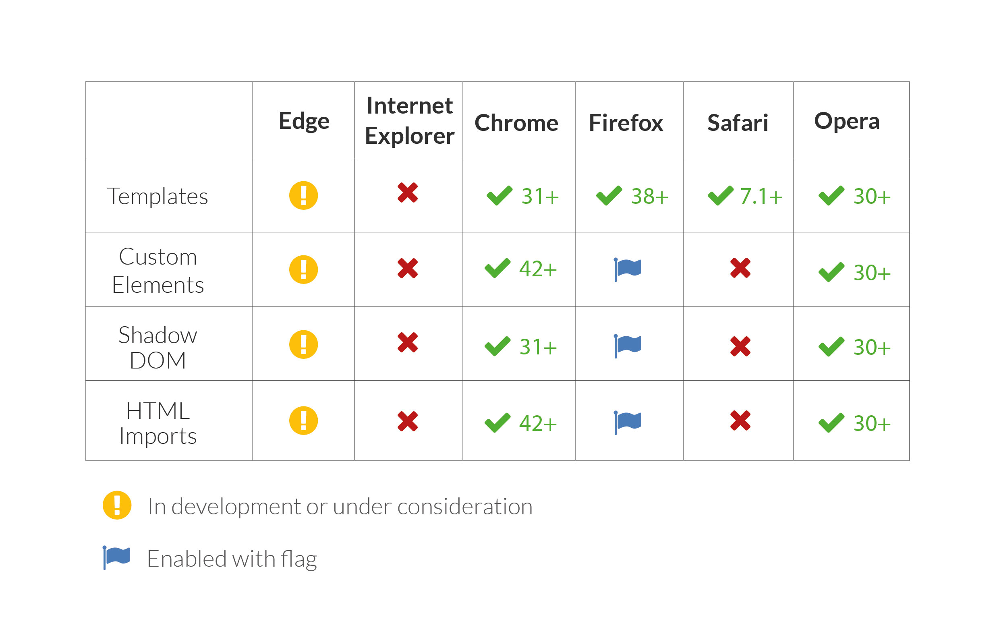

Introduction
The goal of this discussion is to review the new and exciting technologies being specified in
the web platform today, specifically Web Components. These technologies allow developers to
create easily maintainable user interfaces that are simple, semantic and reusable. These changes
however don’t yet enjoy full support from the community or browser vendors and are not yet widely
practiced. This raises some questions: is this really the future of web development? Has this been
done before? What are the problems these techniques solve?
I plans on answering these questions by investigating the ideas behind modular design
and the web platform ecosystem. Each Web Components technology will be examined to better
understand how these technologies can solve current development problems and how they all fit
together. Lastly, a review of current issues and implementation will be made. It is important to
determine where web development stands today in order to better understand where it might be
heading in the future.
I will discuss ideas and technologies that are very young and not yet standardized or well
established. Many of the resources that will be used are still in draft, not yet complete, or not yet
formally published. However, the specification process of the W3C and related working groups is
integral to innovation on the web, which is a primary focus of this discussion.
The Web Today
Since the birth of the world wide web in the late 1980’s, major transformations in how
people and companies relate to each other and share information have occured. This transformation
can now be seen in almost any major pillar of society - mass availability of information has improved our education system and enabled a more informed public, entertainment has become democratized
by allowing anyone to be a publisher and the way in which we consume and do business do not
even resemble the structures that they had less than a quarter century ago[1]. Websites
have evolved from static documents into dynamic applications used across different browsers,
devices and operating systems. This has been enabled through a collection of open (royalty-free)
technologies known as the Open Web Platform, built on a core of HTML, CSS and JavaScript.
Today, with the introduction of many different web-enabled devices, many products and companies
are moving their web-based apps to proprietery mobile platforms. This is notable when looking at
significant tech products and companies such as Instagram, WhatsApp and SnapChat that are either
native only or with web as second consideration. Native applications talk directly to the operating
system giving them speed and capabilites not yet possible on web apps. Today, web applications are
often perceived as slow, bloated and expensive in comparison with native applications. To keep up
with native apps, the web platform must continue to grow and add new features[2].
Evolving Specifications
As the web began to grow, so did the need for global interoperability, accessibility, stability
and quality-control. This lead to the creation of the World Wide Web Consortium (W3C) in
1994[3]. Ever since then, the W3C has been bringing together groups of diverse stakeholders
and public experts to write the technical specifications and guidelines for the web platform.
The specification process can often take months to years, followed by careful implementation by
browsers. These delays lead to a stagnating effect on new features in the platform[4].
Lack of new features prevents the web from moving forward and thus creates major gaps in what
web developers can do compared to native apps.
The Extensible Web Group, which was formed in 2013, has been trying to solve this problem by
allowing new low-level features to be implemented in browsers without waiting for the specs to
be finished. This is done by adding the new features with currently available JavaScript, also called
polyfilling[5]. This allows developers to start using new features right away, including
Web Components.
Modular Design
It is clear that developers are constantly looking to add structure and efficiency when
designing web applications, which is where modular-based design comes in. Modularity is an
important design principle, well known in the back-end programming world for some time.
The ISO/IEC/IEEE define modularity as “The degree to which a system or computer program is
composed of discrete components
such that a change to one component has minimal impact on other components”. The general goal of modularity is that the modules are extensible, reusable and maintainable [6]. These principles bring many advantages not only to back-end programming but to
the front-end as well.
Modular components can be placed into any system and work as expected without conflicting with
other parts. By making a web application modular, developers are ensuring that a clean foundation
is set for their project. In the future new developers would not need to know the details of how each
module works in order to use it. Often, in large projects, changes may be required.
The ability to add new components without breaking the existing code base is crucial in modern
web development[7].
What needs Fixing?
As discussed earlier the web is in a transitional state of constant growth and evolution. The web platform is already being widely used as an application platform. Developers now have a huge selection of libraries and frameworks available to ease application development. However, with such a large selection it can be challenging to keep up to date and to know what the appropriate tool for any specific job is. Not only that but these component libraries are not always interoperable and can cause conflicts when mixing and matching [8]. Problems can also be found in the core of the web platform itself, CSS, HTML and JS. Next, the major issues of the web platform will be reviewed.
Coupling and Seperation of Concerns
The traditional computer science idea of separation of concerns says that each section of an
application should only be responsible for one thing and should not contain code that deals with
other things. This principle is meant to break down applications into smaller units of encapsulated
functionality and reduce complexity [9]. JS, HTML and CSS are each layers of the
web platform that under the decoupling principle should be separated. However, this is not often
the case. The problem is that HTML, CSS and JS are by nature built to interact with each other.
Large projects have trouble keeping their code modular, which often results in tight coupling
between their HTML, CSS and JS. By not following the principle of separation of concerns, changes
to one part of a project can inadvertently break unrelated parts elsewhere. This tight coupling is
most often caused by overly complex CSS selectors. When the CSS file defines complex selectors
it is often necessary for them to match the HTML structure, thus tightly coupling the styles to the
markup. Furthermore, JavaScript can also become coupled when needing to select elements using
the complex selectors.
It is possible to loosen the tight coupling by connecting the HTML, JS and CSS through
thoughtfully named classes that express their intention and reflect their chosen purpose. However,
many developers feel using classes that relate to presentation is bad practice and goes againt the
HTML5 specification section on classes [10].
Conflicting CSS
A major problem with CSS lies in the fact that every CSS selector is global. This means
every CSS rule that is written has the potential to affect entirely unrelated parts of the application.
This behavior can cause many problems, including inheritance conflicts, such as rules applied to
parent elements affecting child component elements or, inversely, rules from components leaking
and affecting other elements. Additionally, problems can arise from naming conflicts, which is
when the same class or ID is used by an author unknowingly, thus causing styles to be applied to the
wrong element. This can be made even worse if JavaScript applies unwanted behaviour to selectors
that have naming conflicts [11].
There are however, many techniques for avoiding these conflicts such as specific naming conventions
and logical structure. However these techniques do not solve the underlying global issue and
conflicts can still occur, especially in large applications or when multiple people are working on a
single project [12].
Extensible HTML
HTML has come a long way since the W3C published HTML 4.0 in 1997. Originally created to build static technical documents, HTML is now used to create rich web applications, which is something that it was never designed to do. That said, HTML has experienced a lot of progress - today HTML5 has over 100 elements available. However, even with the large range of elements available, HTML5 without Web Components has neither a way for authors to define their own elements with unique APIs nor a way to extend existing elements. Without the ability to natively create custom elements, the creation of rich user interfaces is more difficult than it could be.
Solutions
Although these problems are much easier to work around using today’s modern frameworks,
libraries and APIs, they do not solve the underlying problems. In order for the web to progress and
make development of applications easier there needs to be a better, standardized solution. These
problems could be solved if there was a way to make modular, natively extensible, and encapsulated
components that are supported accross any device and system, which is where Web Components
come in.
Web Components can be used in multiple applications and provide interoperability between
frameworks making them reusable and modular. In fact, the entire component’s markup can be
placed inside a template which follows the separation of concerns principle, thus minimizing tight
coupling and increasing maintainability of code. Web Components also prevent inheritance and
naming conflicts by seperating the component from the rest of the DOM (Document Object
Model), also known as encapsulation. This is enabled through the Shadow DOM which provides
a private scope rather than a global one. Lastly, Web Components give authors a way to natively
create new elements and extend HTML [13].
What are Web Components
Web Components cannot be summarized as a single thing - but rather a collection of complementary technologies for encapsulating markup, script, and styles intoroduction reusable packages, with native support available in the browser [14]. Currently this technology is still
being specified by the W3C and is only fully supported by Chrome 26+ and Opera 15+. However,
the Google Chrome Team and many influential web developers including Eric Bidelman, Addy
Osmani and Dimitri Glazkov are the leading advocates helping to push the process along.
This section will discuss how and why web components came about and provide a brief overview of
how they work. In closing, examples of ways in which we can use this technology will be presented.
History
Originally, the term “web components” was used by Microsoft to describe their add-ons to
Office. Then Sun, now called Oracle, used it to describe Java servlets. Apparently you could even
get some kind of certification as a “web component” developer from Sun Microsystems [15]. The word “component” is also not a new one when it comes to CBSE (Component
Based Software Engineering), which is based on the approach of developing software systems by
selecting already available components and then assembling them using a well defined software
architecture. Since the beginning of 2011 and also currently, the term
“Web Components” has been used to refer to the new W3C standards.
The development of modern “Web Components” can be traced back to 2005, with the beginning of
the „AJAX“ revolution and server side RAD (Rapid Application Development) frameworks such as
Ruby on Rails, CakePHP and Django. These technologies helped advance front-end development
by delivering content asynchronously while maintaining performance and enabling websites to be
built in weeks rather than months [15]. Additionally, in 2005, the DOJO toolkit was
released, allowing developers to add widgets to their websites with only a few lines of code. This
further underscored the advantages of creating reusable modules.
In 2006 the JavaScript library jQuery was revealed. This library allowed developers to write JavaScript
programs leveraging a simplified API for DOM interaction across a large range of web browsers. This
helped kick off the era of “single page apps”. Accompanying the success of jQuery came many other
front-end libraries, toolkits and frameworks including YUI, Prototype and Extjs - each including
their own stock widget libraries. The time period around 2010 saw major progress in client-side
development and the popularity of single page apps, which lead to client-side implementations of
MV*(Model View Whatever) patterns. Here, the importance of reusable and well-encapsulated UI
components became increasingly relevant due to code bloat in large-scale single page web apps and
front-end frameworks [15].
Today these front-end libraries, toolkits and frameworks all appear to have major limitations - they
do not interact well together, nor can developers easily mix and match components from different
frameworks or libraries. Another major limitation when working with component based libraries
is the browser platforms themselves. If the browser vendors had successfully built capabilities to
encapsulate, package, and re-use code in HTML and DOM APIs before the AJAX revolution,
modern web development would perhaps be very different today. This is what Web Components
has to offer - native browser support for extending, packaging, encapsulating, and importing UI
components.
Google has been the leading advocate for web components since the first W3C draft in May of
2012, which was edited by Google’s own Dimitri Glazkov and Hayato Ito. Google’s investment
in web components was made evident during 2013’s Google I/O where they announced Polymer,
their own library to build components. Since then, many resource websites such as webcomponents.
org and customelements.io and frameworks such as X-tag and Bosonic have appeared, enabling
modern implementation of web components with better browser support.
Has this been done before?
The idea of encapsulating components certainly solves many issues with the web platform.
It begs the question: why hasn’t this been done sooner? In fact, several past HTML component
technologies have been proposed, but not with much success.
HTML Components (HTC for short) was proposed to the W3C by Microsoft in 1998. Microsoft felt
that with the absence of reusable HTML components, the growth of web application development
would be limitied [16]. Their proposal used a declarative model for attaching events
and APIs to a host element and then parsed components would be attached to a “viewlink”, which
would be comparable to today’s Shadow DOM.
Mozilla also implemented their own version of web components with XBL 1.0 (Xenogamous
Binding Language) in 2001, and then followed up with a successor, XBL 2.0, in 2007. Similar to
Microsofts HTML Components, XBL declaratively describes the ability to associate elements in a
document with other HTML, JS and CSS [17].
After Microsoft’s and Mozilla’s failed attempts at creating web components, Google is now leading
the proposals. But these failed attempts did not go without notice. Both the documents from XBL
1.0 and XBL 2.0 provided tremendous insight into the problem of functional encapsulation and
greatly influenced the Shadow DOM specification [18].
Overview
Each HTML element, whether it’s a<button>,<ul>or<input> element, has a defined API
and support built into the web browser. When you use these tags, the browser takes data supplied
from your markup, renders the element, and reacts accordingly to user and script actions [14]. Elements range in complexity from simple <div>'s to complex elements like the date
selector input element. The date selector is composed of many child elements that show and hide
in response to user input. Furthermore, all styling is already applied without additional css scripts
being imported and this styling does not leak to the rest of the page. The date selector shows how
an element itself encapsulates the internal markup, scripts and stylesheets. With web components
developers can build such elements through the use of four W3C specifications - Custom Elements,
HTML Templates, Shadow DOM and HTML Imports. These combined technologies allow
developers to encapsulate markup, scripts, and stylesheets into reusable packages, with native
support available in the browser.
Possibilities
Since web components are still in the drafting phase, changes are still to come. However, it
is possible to imagine how Web Components could change the foundation of web development.
As an example, imagine embedding a YouTube video using a <youtube-video> component or
displaying a Facebook profile on a web page or blog with a <facebook-profile>. By designing an
app in this way, it is possible to break an application down into the smallest reusable pieces of
functionality and then to recombine those pieces into a modular application. You can mix your
own components with those from third parties and other developers can take your components and
re-use them in their applications [14]. Entire applications can even be built using
a single component. This paradigm shift that componentization brings to web development could
also open the field to non-technical people, enabling pluggable components with little or no coding
knowledge required.
The Building Blocks
As discussed earlier, web components are made up of four W3C specifications, Custom Elmenets, HTML Templates, Shadow DOM and HTML Imports. These specifications are the building blocks of what makes up Web Components. This section will review each of the four current specifications in detail to better understand how this technology is extending the web platform and helping with web development. It is important to note that these specifications are not yet complete and are still being modified and reviewed.
HTML Templates
The College English Dictionary defines Templates as a document or file having a preset
format, used as a starting point for a particular application so that the format does not have to be
recreated each time it is used. This definition follows the modular design approach and is becoming
an important part of modern front-end web development. However, the term “Template” is not
new when it comes to backend development. Templating first became popular with server-side
templating engines such as Smarty(PHP), Django Templates(Python) and ERB/Haml(Ruby) [19]. The main role of these engines is to seperate business logic from the presentation
of data. This allows developers to remove complex and ugly code from the HTML.
Today, client-side templating libraries such Handlebars, Dust and Nunjucks use similar techniques
and are becoming very popular. However, Web Components’ template tags allow the development of
native templates that are standardized and often more efficient in browsers than current templating
methods [13].
Advantages of HTML Templates
The current front-end templating methods are effective, however they also come with a
range of problems. One method known as overloading scripts employs template content rendered as
a string in a script tag with an unsupported type attribute (such as “text/x-template”). The unknown
type attribute causes the contents to be ignored by the browser’s renderer and parser. However, this method encourages the use of .innerHTML and can open up XSS vulnerabilities. In a second
method, template content is hidden using CSS styling such as display: none. However, the content
being hidden does not mean that resources such as images and scripts are ignored - many browsers
will prefetch these resources. Additionally, these methods can be painful to style and can often lead
to CSS naming conflicts [19].
HTML Templates are completely inert, which means assets are not processed and the template
markup is not rendered until it is needed. This allows developers to reduce initial requests on
page load, because they can freely add multiple templates while avoiding parsing unused markup.
Additionally the templates contents are not considered part of the DOM (Document Object
Model). This means when JavaScript traverses the DOM, none of the templates child nodes are
included. This helps to speed up node lookups and ensures that the template content remains
hidden to browsers until it is needed [14].
How is it inert?
The template element <template> is used to hold fragments of HTML that are not rendered
on page load but may be subsequently instantiated during runtime using JavaScript. This element is
a HTMLTemplateElement interface - the template interface that extends the HTMLElement class.
Like all W3C interface objects it contains an IDL (Interface Definition Language) that is used to
describe its states and behaviours to the browser [13]
interface
HTMLTemplateElement :
HTMLElement {
readonly attribute
DocumentFragment content;
};
The previous code is the IDL for the template element. It describes the element as having one
read-only attribute called “content” which returns a DocumentFragment. The DocumentFragment
object is asscociated with a different Document object than the rest of the website. This prevents the
template contents from interfering with the main Document while still allowing the actual element
node to be selectable [20]. This inertness of the template content improves
web application performance.
Creating and initialization
A template is created using the opening <template> and closing </template> tags. The
element can be placed anywhere in the <head>, <body> or <frameset> including subsequent
children elements [21].
<template id="mytemplate"> <img src="" alt="template image"> <div class="message"></div> </template>The first step to activate the template is by selecting the template element followed by either cloning or importing the templates content into a new document using script. This is done using the .content attribute associated with the element [20]. To following code illustrates the process of selecting an elment and retrieving the content.
var myNewTemplate = document.querySelector('#mytemplate'); // Additionally populate template content at runtime myNewTemplate.content.querySelector('img').src = 'logo.png';Once selected the content must then be cloned or imported. The first method - cloning - uses the cloneNode() method shown in the following example.
var templateContent = myNewTemplate.content, activeContent = templateContent.cloneNode(true); container.appendChild(activeContent);The Boolean parameter represents the cloning type - true for deep cloning, which targets the node and all of its children nodes, and false for shallow cloning, which only targets the parent node and no children. The second approach uses the importNode() method which has a slightly different syntax.
var templateContent = myNewTemplate.content, activeContent = document.importNode(templateContent, true); container.appendChild(activeContent);It takes two input parameters - the first being the templates content node and the second is the boolean flag representing the cloning type, again with the same boolean option as in cloneNode(). Either method can be used - they will result in the same outcome. The only difference between the two is how the templates content is actually cloned. With cloneNode() it is first cloned in the template document and then moved into the new document when it’s appended. With importNode(), it is cloned and moved at the same time when it is appended. [20].
Custom Elements
Complex web applications are often coupled with complex and often messy HTML. As
mentioned earlier, this is because HTML was originally created for simple technical documents
and not the complex websites we see today. Custom Elements enable developers to create their own
custom HTML tags and extend existing tags to ensure more semantic and readable markup as well as
providing easier component reuse (Kitamura, 2014). Even though we can currently create our own
custom tags such as <foo>, we do not have any of the functionality that the new Custom Elements
allows. Custom elements provide a common way to encapsulate functionality in a self-describing manner that is stored in a reusable tag that include definable lifecycle methods.
Registering New Elements
The initial creation of a custom tags can be done declaratively using HTML such as
<custom-tag></custom-tag> or imperatively through script. The element can then be registered
with the browser. This is done using the document.registerElement which takes two arguments.
The first argument is the element name and the second is an optional argument which allows you
to define the prototype object from which the element inherits. If no second argument is given the
custom element by default has a HTMLElement.prototype object [21].
var customElement = document.registerElement('foo');Every document has a registry which contains a set of element definitions. When an element is registered it’s definition is then stored in this registry. Effectively, whenever a new DOM element is created, whether imperatively or declaratively, the browser will scan the registry for a matching element definition. If one is found, the browser creates a new instance of the custom element [22]. However, if the element definition is not yet registered, the custom element instance is called an unresolved element. This unresolved element can be then upgraded to a custom element if registered later [14].
It is imperative that custom elements contain proper naming conventions. Each element name must contain at least one hyphen-minus symbol and cannot contain underscores [23]. This distinguishes them from non custom elements and built-in HTML elements. The browser will treat elements with hyphened names as a valid custom elements that have HTMLElement interfaces rather than HTMLUnknownElement such as unknown tags without hyphens [14][24]. This is also to prevent naming collisions from occuring as new elements are added to the HTML specification [21]. If an element is attempted to be registered with an incorrect name an error will result.
Adding Prototypes
Registration alone doesn’t make custom elements very special. As instantiated, a custom tag conveys a similar amount of semantics as a HTML div or span element. In order to actually add custom behavior to a custom element, properties and methods must be defined for that element through a JavaScript API [24]. This can be done by first creating a new JavaScript object using the Object.Create() method. This method accepts two parameters, the first is the target prototype of the newly created object and the second is optional parameter is a propertyObject and is used to define new properties and methods. When creating standard, non-extended elements the default HTMLElement.prototype is used as the first parameter as shown below.
var newCustomPrototype = Object.create(HTMLElement.prototype);The preceding code has created a new object with the HTMLElement.prototype and has assigned this to the newCustomPrototype variable. However, developers can also utilize the optional propertyObject parameter and immediately define some methods and properties as follows:
var newCustomPrototype = Object.create(HTMLElement.prototype, bar: { get: function() { return 5; } }, foo: { value: function() { alert('foo() called'); } } )This method of constructing the prototype makes use of JavaScript’s get/set syntax [25]. If the propertyObject parameter is not used then methods and properties must be added to the object variable dynamically as seen below.
var newCustomPrototype = Object.create(HTMLElement.prototype); // Give newCustomPrototype a new foo() method newCustomPrototype.foo = function() { alert('foo() called'); }; // Define a property "bar" Object.defineProperty(newCustomPrototype, "bar", {value: 5});The preceding code used the defineProperty method to add properties to the newCustomPrototype object. This method contains three parameters - the first parameter should be your prototype object, the second is the name of the property and the third should be an object describing the behaviour of that property. This is where you can set a default value as well as specify whether the property is writable or read-only [13]. Once the API for the custom element is defined in the prototype object it can added to the document.registerElement() method upon registration. As mentioned earlier, the second parameter of document.registerElement() contains a property called prototype which can be set to the newly created prototype object.
document.registerElement.('foo', {prototype: newCustomPrototype});If the element has not yet been instantiated declaratively it can then be added to the dom imperatively either with document.createElement() or with the new operator [25].
var superInput = document.createElement('input', 'super-input');
Extending Elements
The registerElement() method shown earlier can also be used to extend the functionality of custom and native HTML elements. To extend an element, an ‘extends’ key should be added to the registerElement() second parameter with the name of the element it wishes to extend. The use of the ‘extends’ option specifies that the element is being registered as a type extenstion custom element instead of the standard custom element [21].
var superInput = document.registerElement('super-input', { prototype: Object.create(HTMLButtonElement.prototype), extends: 'input' });The above code illustrates how the custom element
<super-input> extends the native <input>
element. As instantiated it would inherit the input element’s name, role, states, properties and builtin
focus and keyboard interaction behaviours. This means that it does not introduce a new tag, but
rather extends an existing element of the specified type under the existing tag name (in the example
above, ‘input’). An extended element can be instantiated declaratively using the ‘is’ attribute.
<input is="super-input">
Another way to instantiate an extended element is imperatively in JavaScript using the createElement()
method and setting the second parameter as the extended elements name [24].
Life Cycle Callbacks
One feature that many JavaScript components lack is a clearly defined life cycle. Often the instance of the component must be stored in a variable so that functions can be called on it later. However, with Custom Elements, the actual element in the DOM is the instance. The functions are available right on the element (Bateman, 2014). This is possible because the element’s prototype object goes through different states during its lifecycle. Various callback functions can be defined to be invoked during these different states. These callbacks are stored internally as a collection of key-value pairs and called lifecycle callbacks [24]. There are four recoginized callbacks available to each custom element:
- createdCallback() - invoked once an instance of an element is created
- attachedCallback() - invoked when an element is inserted into the DOM
- detachedCallback() - invoked when an element is removed from the DOM
- attributeChangedCallback(<name>,<oldVal>, <newVal>) - invoked whenever an element’s attribute is added, changed or removed.
var newCustomePrototype = Object.create(HTMLElement.prototype); NewCustomPrototype.cretedCallback = function() {...}; NewCustomPrototype.attachedCallback = function() {...};
Shadow DOM
As discussed earlier, one of the aspects that makes front-end development so difficult is the lack of encapsulation. This is especially problematic when faced with component development. Without encapsulation, CSS rules meant for components could leak and cause css conflicts. Another issue is that code external to the component can still traverse into the component’s branch of the DOM tree. The following section will review how Shadow DOM addresses this DOM tree encapsulation problem.
Trees of Trees
When a page is loaded, the browser creates a DOM (Document Object Model) of the page. The HTML DOM model is constructed as a tree of objects also called nodes [36]. Nodes are allowed to express three different subtrees, the Document tree, the Shadow tree and the Composed tree. The Document tree represents the normal DOM tree whose root node is a document. This tree is visible to the end user. The Shadow tree represents the internal DOM subtree which is scoped and not visible to the end user. The Composed tree is what the browser actually renders [13]. For rendering, the document tree is distributed into the shadow DOM to produce the composed DOM [38].  Any node in the document tree can “host” one or more shadow trees. These host nodes are then referred to as shadow hosts. The associated shadow tree hosted by this node contains a root node called a shadow root as seen in the previous image. It is important to note that the shadow root is not a child node of the shadow host; to the contrary the shadow root does not have a parent at all. Because it’s an orphan, the shadow tree and all of its children nodes are scoped and do not affect other node trees. For example, document.getElementById(‘shadowElementId’) will always return null. This also applies to CSS selector matches. Additionally, when a shadow host has multiple shadow DOM subtrees only the last or oldest tree will be rendered [27].
Creating the Shadow DOM
A Shadow DOM subtree must always be attached to an existing element, called the shadow host. The shadow host can be a declarative HTML element, an imperative element created with JavaScript or even a custom element. The Element.createShadowRoot(<hostElement>) is used to create the scoped shadow root and the shadow DOM subtree attached to the host element.
<button>Hello!</button>
<script>
var host = document.querySelector('button');
var root = host.createShadowRoot();
</script>
The above example adds a shadow DOM to a <button> element containing the text content
“Hello!”. Using JavaScript, content can be added to and removed from the shadow root as show
below.
root.textContent = 'Now say Goodbye!';
The Composed tree then takes the shadow root and Document tree and builds up the new document.
The content of the shadow root is then rendered and visible to the user. If JavaScript attempts to
query the shadow host element or if the element is inspected in a browser, the shadow dom contents
will not be found. Only the original <button> element and “Hello!” will be returned as shown in
the following example.

This is why when an input tag is inspected the user only sees the <input> tag and nothing else. That
is because the actual inner contents are encapsulated and hidden in that element’s shadowroot.
Distribution
Distribution is the mechanism that determines which nodes inside a shadow host get
‘projected’ into insertion points inside the host’s Shadow DOM. These projected nodes are referred
to as distributed nodes. There are two types of insertion points - content insertion points and
shadow insertion points.
Currently, the special <content> element can be used declaratively in the shadow DOM to define
where certain host’s content should be visually projected . However in cases where
only specific parts of the hosts content should be projected, the select attribute can be used. This
attribute accepts a css query selector to be matched in the context of the shadow host. The matched
element’s content is then injected into that content tag. If
multiple elements are matched, only the first element found will be projected.
Shadow insertion points are similar to content insertion points in that they are placeholders for
their host. However, instead of projecting content, they project other shadow trees belonging to
their host. This allows shadow root inheritance as well as enabling multiple shadow roots to be rendered at the same time.
It is important to note that in both content distribution and shadow distribution the nodes do
not move locations in the DOM, they are simply projected to different insertion points across the
shadow root [21][28].
Events
Events in the shadow DOM behave differently than those in the document tree. Any events fired from nodes in the shadow DOM are retargeted so they appear to come from the shadow host. This is to prevent any encapsulation breakage. However, certain events are completely blocked at the shadow root and are prevented from bubbling up to the document tree. The following events are blocked in the shadow DOM: abort, error, select, change, load, reset, resize, scroll, selectstart [29].
Styling
Shadow DOM elements can be styled both internally and externally. CSS styles defined internally in the shadow DOM are scoped, meaning they are encapsulated by default and any styles applied inside will not effect the outside elements. Internal styling is done using the :host pseudoelement which targets the shadow host from within the shadow DOM. However, the parent page selectors have a higher specificity than the :host selector, meaning outside stylesheets can override any styles defined inside the shadow DOM. This can be resolved by writing inline styling on the host element [21]. External styling from the parent page can be done using the ::shadow pseudoelement which allows developers to select child elements of a specific shadow root. When selecting all shadow roots within an entire application it is best to use the /deep/ combinator.
HTML Imports
The majority of the web platform is declarative in how it imports content. For instance,
<script> is used for JavaScript, <link> for css and <img> for images. However, HTML does not have
a standard import which has lead to often complex and ineffecient ways of loading external HTML.
Currently, the standard methods include AJAX, <iframes> or other messy hacks like embedding
html in strings. HTML Imports improves the status quo by allowing developers to include and reuse
HTML documents in other HTML documents. The import process also includes any resources
used inside the imported document such as JavaScript, CSS and images. This enables modularity
through bundling of resources with components [30]. The following sections will
review how this technology works and how it can help with page load times, code reusability and
dependency management.
The Basics
HTML Imports use the <link> element to reference the file that you wish to import. This is
similar to how stylesheets are included except for the ref attribute, which is set to the new “import”
keyword.
<head>
<link rel="import" href="path/to/importstuff.html">
</head>
A document that links to an import is called an ‘import referrer’ and the document that is being
imported is simply called the ‘imported document’ [31]. The URL of the
import is called the ‘import location’ and must adhere to the same-origin policy as AJAX requests,
meaning no cross-origin requests. However, this restriction can be avoided if the server that is
responsible for delivering the imports has been configured to support cross-origin resource sharing (CORS) [21].
Parsing
The link element does not block any parsing of the import referrer but does block rendering.
This is because any styles from your import are automatically applied to the main document to
prevent any Flash Of Unstyled Content (FOUC). However, if the imported document contains
any <script> tags, they will block parsing of the import referrer just like script tags in the main
document. This is because any scripts within the imported document are executed in order in the
context of the import referrer. This means scripts inside the import will be automatically called and
must not be appended into the main document. The import can be made completely asynchronous
and not block parsing or rendering by adding the async attribute to the link import tag [30].
Accessing Imports
Anything other than scripts and styles in an imported document are only referenced and not directly inserted into the import referrer. The contents of the imported document can be inserted into the main document using JavaScript. This is done through the use of the link elements .import property which references the import documents contents.
var link = document.querySelector('link[rel="import"]'); var content = link.import;In the example above, the link element is selected and the contents of the imported document are assigned to the htmlDoc variable as a DOM tree. Nodes can be selected, cloned and appended from this tree into the main import referrer document. JavaScript inside imported documents have the same global document object as those from the import referrer. For instance, a document.querySelector() in the imported document would only select elements in the main document. In order to instead access the imported document’s document object and DOM, the document.currentScript.ownerDocument must be used. This is common when a component wants to automatically register custom elements and include them in the main document [30].
Events
Similarily to Ajax success and error callbacks, the HTML <link> element supports two
event handlers - load and error. Once the import has been successfully loaded the load event will
be fired. This can be leveraged by attaching callbacks to the onload attribute of the link element.
Otherwise, if the import returns an HTTP error, the error event will be fired and any error callbacks
assigned with the onerror attribute will be invoked [13].
Performance
One of the advantages of using HTML Imports is the ability to organize and seperate sections of an application into components. If multiple components require the same libraries this would normally lead to many HTTP requests and slower page loading. HTML Imports’ solution to this is its own built-in mechanism called de-duping. De-duping prevents multiple requests for the same resource URL. That is, if multiple imports reference the same URL, the browser will only retrieve the required resource once [30]. However, de-duping only works on exact URL matches - different URLs for the same resource will still be requested. Another key to good page speed is reducing network requests. When an application imports many components this can greatly slow down page load times. It is recommended to combine the import links into a single resource using tools such as Vulcanize, which is a npm build tool from the Polymer team. However, this recommendation changes with the use of HTTP/2, where the number of requests is no longer an issue.
Working Together
It is clear each part of the Web Components umbrella has it’s own distinct features. Each
technology can be utilized alone or in combination with others. A component that utilizes each
of the Web Components technologies will enjoy the advantages that come from each part, thus
improving modularity and reusability.
Ideally a component using Web Components technologies would be included in an application
via the HTML Import link tag. This would mean all of the component’s resources and styles
are bundled together, ensuring optimum reusability. Next the contents of the import would be
wrapped inside a <template>. This would ensure that none of the resources, images and styles are
loaded until they are needed. Inside the template there would be semantic and structured HTML
including custom elements. Finally, using the Shadow DOM affords the added benefit of style
encapsulation. This component development technique solves many major difficulties that web
developers face today.
Are We Ready For Web Components
The previous section revealed how extensive the current Web Components APIs are. However, they continue to be improved upon: even after more than three years, vendors are still negotiating the current draft and many changes are still to come. It is this negotiation that is hindering author acceptance. The next section will review current vendor support and issues with each Web Components technology, including accessibility. Web Components polyfills will also be evaluated to see how Web Components are being used in production today.
Current Support
The following chart shows current brower support for each technology.

Currently, Internet Explorer does not support any of the Web Components technologies. Microsoft
is however actively participating in the standardization process and is satisfied with the direction
the specifications are heading [32]. Microsoft did announce in July 2015 that they will
be starting implementation of HTML templates in Edge, their new browser in Windows 10. After
they are finished the rewrite of Edge’s new DOM, they will begin implementing the Shadow DOM
as well as Custom Elements. However HTML Imports are still under consideration [33].
Firefox has implemented all of the specifications of Web Components, but only HTML Templates
has been enabled by default (without the use of a flag). Mozilla has said that they will be shipping
Custom Elements and the Shadow DOM when they are satisifed with the specs. However, they do not have any plans to ship HTML Imports due to possible conflicts with ECMAScript 2015
module imports [34].
Safari currently only supports HTML Templates. Apple’s Maciej Stachowiak has however stated
“we think the concept of Web Components is great, and we even like many of the specifics. We’re
considering significant implementation effort, but we have some concerns“. It seems they will also
be waiting until the final specifications are finished [35].
Lastly, Chrome fully supports each of the Web Components technologies, which is no surprise
since they are the leading advocates and were the first to ship implementations of the initial specs.
Since Opera uses the same Blink layout engine as Chrome they also have native support.
Issues and Future Specifications
The next few sections will examine why the specification process is still happening and what the major issues for each constituant technology are. Possible future specifications will also be reviewed.
Template Element
The Template Element is the first of the Web Components technologies to be officially moved into the HTML5 specification. This has lead to support from all major browser vendors. According to caniuse.com, the template element is the most widely supported Web Components technology with 69.27% global support, based on worldwide browser marketshare statistics. The only caveat is that current HTML Template polyfills are not truly inert. This means that resources such as JavaScript and images will be loaded on pageload even though the template is not displayed.
Custom Elements
The Custom Elements specification also enjoys strong support from vendors. There is a
general consensus that exposing the element lifecycle is an important aspect for the creation of
components. However, there are still some issues being negotiated. The two largest unresolved
concerns are as follows.
The first concern is how Custom Elements should be upgraded, which is when they change from
HTMLUnknownElements into registered custom elements. The main problem with the current
specification is the lack of integration with the new classes from ES2015 as well as vendors feeling
that the elements are ‘unknown’ at first, then upgraded into their final form at some point in the
future, which can lead to developer confusion. Additionally, FOUC (flash of unstyled content) can
appear when elements are upgraded. This unwanted user experience can be prevented by placing
script tags in the header, however this will also slow page load times. Another solution that works
in modern browsers is by using the pseudo CSS selector :unresolved. For older browsers Google’s
Polymer library has polyfilled the :unresolved selector [21].
The second issue is how elements should be extended. Because subclassing existing elements
is so difficult the <element is=“new-element“> hack was created. However, many developers find
the syntax confusing and believe it goes against the entire goal of Custom Elements allowing
customization over markup [28].
Shadow DOM
In stark contrast to Template Elements and Custom Elements, Shadow DOM has by far the
most contention between vendors and is now being split into a version one and two agenda. One of the biggest issues being discussed is distribution. This is when content from the shadow
host gets projected into the Shadow DOM. This current API is fully declarative based on the
<content select=“element“> tag, however many feel this approach is too complex. The consensus is
to pursue an imperative solution instead. Additionally, the <content> tag will be changing to <slot name=“element“> in hopes of making it more explicit and easier for developers and browsers to
understand. The main difference between <slot> and <content> is that developers must now assign
a slot to the elements that they wish to project using a new slot attribute [28].
Secondly, the idea that Shadow DOM should be either ‘closed’ or ‘open’ is another debate. Currently,
a shadow root is accessible through the myHost.shadowRoot property. The ‘closed’ mode would
restrict access to this Shadow DOM, making it completely isolated. Vendors such as Apple feel that
it may be important to fully isolate an element’s implementation details [35]. There
are many use-cases that seem to make sense with restricting access such as advertising or social media
widgets and video embedding from hosting services. A ‘closed’ Shadow DOM could guarantee
security as well as simplicity when compared to solutions with JavaScript or iframes [36]. However, a ‘closed’ shadow DOM would also prevent accessibility and component tooling
use-cases. Version 1 of Shadow DOM will include a ‘mode’ parameter, which will require developers
to specify either ‘closed’ or ‘open’.
Another major topic is Shadow DOM styling. Currently, the ::shadow selecter as well as the
/deep/ piercing combinator can be used to style anything in a shadow root. Plans to rename /deep/
to >>> combinator have been proposed. However, allowing outside selectors to traverse the shadow
root can reduce performance and most vendors are against this.
Lastly, the complexity surrounding multiple shadow roots is also in discussion. Multiple
shadow roots enable inheritance in component composition. However, due to the current complexity
and lack of elegant solutions, multiple shadow roots will not be included in version 1 of the shadow DOM specification [37]).
HTML Imports
Mozilla, Apple and Microsoft are either not planning on implementing HTML Imports or holding off on their implementation until a future date. The reason for this is because vendors feel that HTML Imports don’t enable anything that isn’t already possible. Currently, developers can use existing module syntax such as CommonJS Modules and Asynchronous Module Definition (AMD) to imort modules as well as resolve dependencies and register elements [38]. Additionally, many vendors are waiting to see how the upcoming ECMAScript 2015 module APIs can align with HTML Imports and imported custom element definitions [28]. There have also been proposals from Apple to implement a new form of HTML Imports called Isolated Imports that would give that import its own JavaScript global object and effectively it’s own css scope. It could also be cross origin and allow the import author to control which custom elements are exported from their import. This proposal follows similar logic to their closed Shadow DOM proposal to further prevent any prototype hacking that might occur. Although, this proposal still is in its infancy it shows future possibilites of HTML Imports, which may lead to further support from vendors [36].
Polyfilling
Traditionally polyfills have been used to deliver modern features to non-modern browsers
such as IE 6-8. Today polyfilling has expanded to enable bleeding-edge and experimental platform
features even in modern browsers. Because Web Components are not yet
implemented in all browsers, many polyfills for their constituent technologies have been developed.
One of the most popular and commonly used polyfill suites is called webcomponents.
js. This library is made up of a set of polyfills supporting the Web Components specifications
allowing developers to start using these new standards in modern browsers. webcomponents.js
automatically detects native support and only activates the polyfills when native support is not
available. The polyfills used in the library can be used singly or as a complete package depending on
requirements. Originally, this library was under the name platform.js and was maintained by the
Polymer orginization, however since then the polyfills have been transferred to WebComponents.
org and renamed to webcomponents.js. The difference between traditional polyfills and the
webcomponents.js polyfill suite is that the webcomponents.js polyfills are still only supported in
evergreen browsers, Chrome, modern Firefox, modern Opera and IE 10+ [39].
There are three main Web Components libraries that leverage webcomponents.js and some
have even added their own polyfills on top, in order to support Internet Explorer 9+. The next few
sections will briefly introduce these libraries and how they are helping developers start using web
components today.
Polymer
Polymer is a library that is developed and maintained by Google and is used to support
Web Components. It is made up of three layers of technology, each serving a different purpose.
The first layer can be thought of as the foundation and is the webcomponents.js polyfill layer. This
layer enables cross browser support for evergreen browsers while allowing native implementation
with browsers that do support Web Components. The second layer, or core, is the actual polymer.js
library. Here an opinionated declarative syntax is placed on top of the standard API. This new syntax
is aimed at making component development simpler and also adds features such as two-way data
binding, property observation and gesture support. The last layer is the Core and Paper elements
set, which is a collection of pre-made UI elements that allow for faster application development [39].
Polymer focuses on implementing all four of the Web Components technologies to ensure browsers
that support components natively get all the benefits. This means the full Polymer library containing
each webcomponents.js polyfill is a bit large coming at 44kb minified and gzipped and 163kb
without compressing. However it is possible to download a light version that doesn’t include the
large Shadow DOM polyfill.
X-Tag
X-Tag is a smaller JavaScript library, created and supoorted by Mozilla. Unlike Polymer, X-Tag is focused on Custom Elements rather than the entire Web Components suite. This makes the code smaller and faster as well as improving browser support. Like Polymer, the X-Tag library components can be downloaded seperately allowing developers to pick and choose which polyfill set they want to include. The X-Tag technology layers include the webcomponent.js Custom Elements and HTML Imports polyfills as well as the Mutaion Observers add on. It also has its own declarative syntax built on top of the standard Custom Element API. X-Tag custom elements feature custom events and delegation, mixins, accessors and component lifecycle functions. On top of this is their own pre-made component library called Brick which currently contains 14 elements [40].
Bosonic
Bosonic uses a different approach compared to the other two libraries. It doesnt add a layer of syntax over the API but instead transpiles components written following the W3C specification into JavaScript and CSS. The goal of Bosonic is to allow developers to write spec-described components while also supporting older browsers as far back as IE9 [41]. Along with their own polyfills Bosniac also uses the webcomponents.js polyfills, specifically the Custom Element, Mutation Observers and Weak Map polyfills. Currently, transpiling can be managed using Grunt, but Gulp is not yet supported. Like the other two libraries Bosonic also has a set of built in elements available [13].
Accessibility
An accessible website is available for and usable by everyone, no matter which device and browser they use and which difficulties they may have. Web Components promise to enhance the web platform and enable easier component development, but they still require effort on the part of the developer to ensure accessiblity. This means that when new elements are created, all the basic web accessibility principles still apply, including visual design, proper semantics and functionality on all devices. This section will review how Web Components are able to extend the accessible browsing experience [42].
Custom Elements
Custom Elements start out as a blank slate. It is the job of the developer to add their API.
This is the same for adding semantics and thus communicating their purpose and state. There
are multiple ways in which this can be done. One way is by extending existing native elements
which would also extend that element’s semantics. Not only does this ensure new elements receive
the existing element’s accessibility features, but it also means the existing HTML element can be
progressively enhanced - if JavaScript is disabled then <button is=”special-button”> will still act
as a regular button. Another option is to include existing HTML5 semantic elements inside your
custom elements. Developers can also provide their own semantics through the use of ARIA roles,
states and properties [43].
Shadow DOM
As previously explained, the Shadow DOM extends the DOM, allowing encapsulation of components. The document that the user sees is actually a combination of the shadow tree and the document tree, called the composed tree. Like regular users, user agents with assistive technology traverse the composed tree and thus utilizes WAI-ARIA (Web Accessibility Initiative – Accessible Rich Internet Applications) semantics in the shadow tree. This means screen readers can access content in the Shadow DOM without issue [27].
Conclusion
Since the World Wide Web was created there has been an explosion in technology and changes in how web pages are created. This evolution continues today with the onset of modular component design. Components allow reusable, interoperable and maintainable code and most importantly they speed up application development while promoting best practices. However, even with modular development, front end developers still face many difficulties, many of which come from the fundamental technologies of the web: HTML, CSS and JavaScript. These technologies where initially never designed to create such dynamic, complex web applications that we see today. And although many libraries and frameworks have tried to find solutions to these problems the underlying issues remain. It is clear that the web either needs new technologies, or the existing technologies need to be upgraded. Web Components attempts at solving these issues by upgrading our existing web platform technologies. Since Microsoft’s attempt in 1998, the approach towards Web Components has changed, even if the core ideas have not. The new specifications display a thoughtful and forward thinking approach. Today, Web Components are finally ready to become a standard, with vendor and community backing. There are still changes to be done before the specifications are finalized, but thanks to the passionate developers pushing the specifications forwards it looks like cross-browser consensus is now in sight. Because of this I believe Web Components have an important place in the web platform and the future of web development.